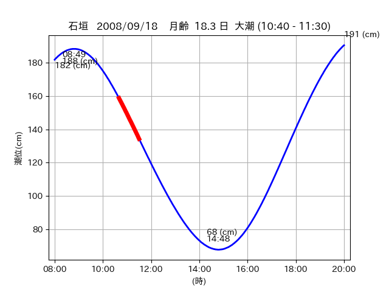
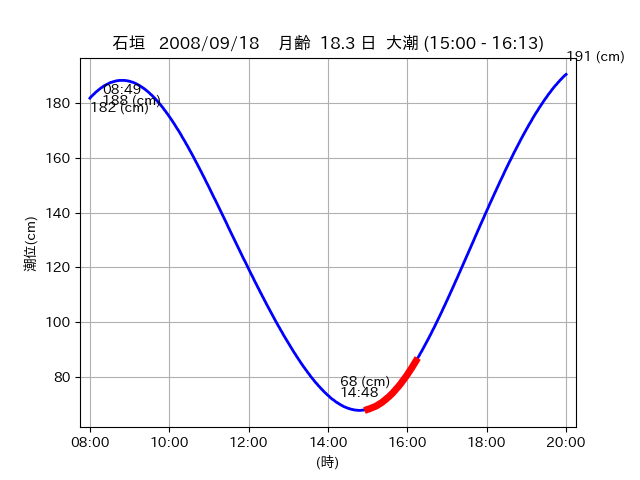

<!DOCTYPE html>
<html>
<head>
    
    <meta http-equiv="content-type" content="text/html; charset=UTF-8" />
    
        <script>
            L_NO_TOUCH = false;
            L_DISABLE_3D = false;
        </script>
    
    <style>html, body {width: 100%;height: 100%;margin: 0;padding: 0;}</style>
    <style>#map {position:absolute;top:0;bottom:0;right:0;left:0;}</style>
    <script src="https://cdn.jsdelivr.net/npm/leaflet@1.9.3/dist/leaflet.js"></script>
    <script src="https://code.jquery.com/jquery-3.7.1.min.js"></script>
    <script src="https://cdn.jsdelivr.net/npm/bootstrap@5.2.2/dist/js/bootstrap.bundle.min.js"></script>
    <script src="https://cdnjs.cloudflare.com/ajax/libs/Leaflet.awesome-markers/2.0.2/leaflet.awesome-markers.js"></script>
    <link rel="stylesheet" href="https://cdn.jsdelivr.net/npm/leaflet@1.9.3/dist/leaflet.css"/>
    <link rel="stylesheet" href="https://cdn.jsdelivr.net/npm/bootstrap@5.2.2/dist/css/bootstrap.min.css"/>
    <link rel="stylesheet" href="https://netdna.bootstrapcdn.com/bootstrap/3.0.0/css/bootstrap-glyphicons.css"/>
    <link rel="stylesheet" href="https://cdn.jsdelivr.net/npm/@fortawesome/fontawesome-free@6.2.0/css/all.min.css"/>
    <link rel="stylesheet" href="https://cdnjs.cloudflare.com/ajax/libs/Leaflet.awesome-markers/2.0.2/leaflet.awesome-markers.css"/>
    <link rel="stylesheet" href="https://cdn.jsdelivr.net/gh/python-visualization/folium/folium/templates/leaflet.awesome.rotate.min.css"/>
    
            <meta name="viewport" content="width=device-width,
                initial-scale=1.0, maximum-scale=1.0, user-scalable=no" />
            <style>
                #map_8eaa57969ea6c0f0c7e9bf9c5cfe445c {
                    position: relative;
                    width: 2048.0px;
                    height: 1600.0px;
                    left: 0.0%;
                    top: 0.0%;
                }
                .leaflet-container { font-size: 1rem; }
            </style>
        
</head>
<body>
    
    
            <div class="folium-map" id="map_8eaa57969ea6c0f0c7e9bf9c5cfe445c" ></div>
        
</body>
<script>
    
    
            var map_8eaa57969ea6c0f0c7e9bf9c5cfe445c = L.map(
                "map_8eaa57969ea6c0f0c7e9bf9c5cfe445c",
                {
                    center: [24.526, 124.314],
                    crs: L.CRS.EPSG3857,
                    ...{
  "zoom": 12,
  "zoomControl": true,
  "preferCanvas": false,
}

                }
            );

            

        
    
            var tile_layer_4c4f02d36bc31371a3c1a51a2bf62e9f = L.tileLayer(
                "https://cyberjapandata.gsi.go.jp/xyz/seamlessphoto/{z}/{x}/{y}.jpg",
                {
  "minZoom": 0,
  "maxZoom": 18,
  "maxNativeZoom": 18,
  "noWrap": false,
  "attribution": "\u5730\u7406\u9662\u5730\u56f3",
  "subdomains": "abc",
  "detectRetina": false,
  "tms": false,
  "opacity": 1,
}

            );
        
    
            tile_layer_4c4f02d36bc31371a3c1a51a2bf62e9f.addTo(map_8eaa57969ea6c0f0c7e9bf9c5cfe445c);
        
    
            var marker_5e09f3d7410dcf7969ccf8e2fcfe21f0 = L.marker(
                [24.561, 124.3434],
                {
}
            ).addTo(map_8eaa57969ea6c0f0c7e9bf9c5cfe445c);
        
    
            var icon_0d3ff25e1b79e46ba757580722c21c15 = L.AwesomeMarkers.icon(
                {
  "markerColor": "orange",
  "iconColor": "white",
  "icon": "info-sign",
  "prefix": "glyphicon",
  "extraClasses": "fa-rotate-0",
}
            );
        
    
        var popup_183dd1bc19828a9690e72eade075b0a2 = L.popup({
  "maxWidth": "100%",
});

        
            
                var html_bc213a936ff98b353d84a66b0b69d2a1 = $(`<div id="html_bc213a936ff98b353d84a66b0b69d2a1" style="width: 100.0%; height: 100.0%;"><table><tr><td></td></tr><tr><td><center>20080918 No.1 </center></table></td></tr></table</div>`)[0];
                popup_183dd1bc19828a9690e72eade075b0a2.setContent(html_bc213a936ff98b353d84a66b0b69d2a1);
            
        

        marker_5e09f3d7410dcf7969ccf8e2fcfe21f0.bindPopup(popup_183dd1bc19828a9690e72eade075b0a2)
        ;

        
    
    
                marker_5e09f3d7410dcf7969ccf8e2fcfe21f0.setIcon(icon_0d3ff25e1b79e46ba757580722c21c15);
            
    
            var poly_line_d04411f379b1e457bfef157f5245f2c3 = L.polyline(
                [[24.561, 124.3434], [24.5588, 124.3373]],
                {"bubblingMouseEvents": true, "color": "#00FFFF", "dashArray": null, "dashOffset": null, "fill": false, "fillColor": "#00FFFF", "fillOpacity": 0.2, "fillRule": "evenodd", "lineCap": "round", "lineJoin": "round", "noClip": false, "opacity": 1.0, "smoothFactor": 1.0, "stroke": true, "weight": 3}
            ).addTo(map_8eaa57969ea6c0f0c7e9bf9c5cfe445c);
        
    
            var marker_364bbcc3149a66cb4b3c8f7d0302b331 = L.marker(
                [24.5578, 124.3358],
                {
}
            ).addTo(map_8eaa57969ea6c0f0c7e9bf9c5cfe445c);
        
    
            var icon_8162655e2c3c086d810f680221f1b326 = L.AwesomeMarkers.icon(
                {
  "markerColor": "orange",
  "iconColor": "white",
  "icon": "info-sign",
  "prefix": "glyphicon",
  "extraClasses": "fa-rotate-0",
}
            );
        
    
        var popup_8b9fdc4debf565de48925f4c2abe9c89 = L.popup({
  "maxWidth": "100%",
});

        
            
                var html_d94bf8bcf854b9a71fef17e32b413c12 = $(`<div id="html_d94bf8bcf854b9a71fef17e32b413c12" style="width: 100.0%; height: 100.0%;"><table><tr><td></td></tr><tr><td><center>20080918 No.2 </center></table></td></tr></table</div>`)[0];
                popup_8b9fdc4debf565de48925f4c2abe9c89.setContent(html_d94bf8bcf854b9a71fef17e32b413c12);
            
        

        marker_364bbcc3149a66cb4b3c8f7d0302b331.bindPopup(popup_8b9fdc4debf565de48925f4c2abe9c89)
        ;

        
    
    
                marker_364bbcc3149a66cb4b3c8f7d0302b331.setIcon(icon_8162655e2c3c086d810f680221f1b326);
            
    
            var poly_line_b97b1977deffbdf01083a8a567f8c4dc = L.polyline(
                [[24.5578, 124.3358], [24.555, 124.3313]],
                {"bubblingMouseEvents": true, "color": "#00FFFF", "dashArray": null, "dashOffset": null, "fill": false, "fillColor": "#00FFFF", "fillOpacity": 0.2, "fillRule": "evenodd", "lineCap": "round", "lineJoin": "round", "noClip": false, "opacity": 1.0, "smoothFactor": 1.0, "stroke": true, "weight": 3}
            ).addTo(map_8eaa57969ea6c0f0c7e9bf9c5cfe445c);
        
    
            var marker_daca2d9622c5cdf0b08eafdee1b48f41 = L.marker(
                [24.5275, 124.3141],
                {
}
            ).addTo(map_8eaa57969ea6c0f0c7e9bf9c5cfe445c);
        
    
            var icon_4e93bf0d70923d412f754e06be1e84bc = L.AwesomeMarkers.icon(
                {
  "markerColor": "orange",
  "iconColor": "white",
  "icon": "info-sign",
  "prefix": "glyphicon",
  "extraClasses": "fa-rotate-0",
}
            );
        
    
        var popup_38d60b1ddcfe23f89bf808269a79a135 = L.popup({
  "maxWidth": "100%",
});

        
            
                var html_f9764e86f9a4ac7563dbb64082f9621a = $(`<div id="html_f9764e86f9a4ac7563dbb64082f9621a" style="width: 100.0%; height: 100.0%;"><table><tr><td></td></tr><tr><td><center>20080918 No.3 </center></table></td></tr></table</div>`)[0];
                popup_38d60b1ddcfe23f89bf808269a79a135.setContent(html_f9764e86f9a4ac7563dbb64082f9621a);
            
        

        marker_daca2d9622c5cdf0b08eafdee1b48f41.bindPopup(popup_38d60b1ddcfe23f89bf808269a79a135)
        ;

        
    
    
                marker_daca2d9622c5cdf0b08eafdee1b48f41.setIcon(icon_4e93bf0d70923d412f754e06be1e84bc);
            
    
            var poly_line_66e84429cb91c05fd2f150a6e61192be = L.polyline(
                [[24.5275, 124.3141], [24.5249, 124.3143]],
                {"bubblingMouseEvents": true, "color": "#00FFFF", "dashArray": null, "dashOffset": null, "fill": false, "fillColor": "#00FFFF", "fillOpacity": 0.2, "fillRule": "evenodd", "lineCap": "round", "lineJoin": "round", "noClip": false, "opacity": 1.0, "smoothFactor": 1.0, "stroke": true, "weight": 3}
            ).addTo(map_8eaa57969ea6c0f0c7e9bf9c5cfe445c);
        
</script>
</html>